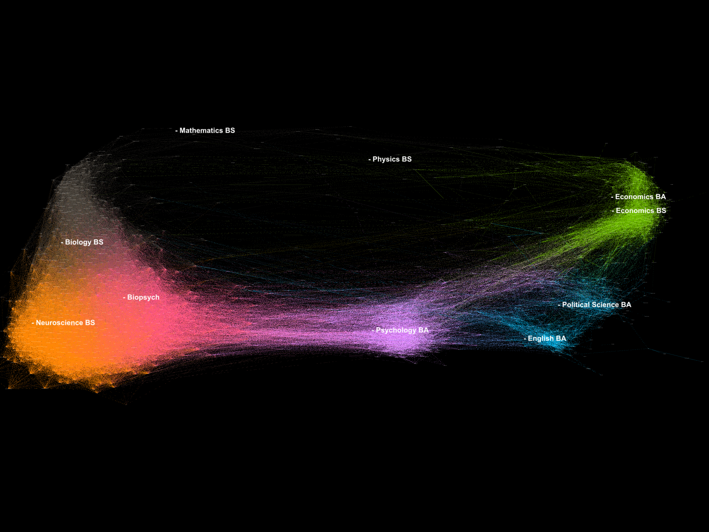

Background
Course enrollment data implicitly contains a record of interaction between students. Students taking the same course contemporaneously are said to interact. Course co-enrollment is a measure of a student's breadth of experience, albeit imperfect, as the strength of the interaction depends on course structure, size, etc. Building and measuring the resulting networks allows us to define communities students within the University and the clustering of these communities.
Network Construction
One begins with a list of students and the courses (and terms) that student took. Network construction quickly becomes computationally burdensome from an unconstrained list, both in terms of CPU and memory. Much of this can be mitigated by careful choice of the student populations, for instance, only considering individuals within a major. CPU requirements can also be reduced by restricting the number courses including in the clustering.
Unweighted Networks from Covariance/Correlation Matrices
This is a simple way of buidling a student network:
- Build a student-course indicator (0 or 1) matrix (students in rows, courses in columns).
- Take the outer product of the matrix with itself to create a student covariance matrix.
- Build a weighted edgelist from this OR
- Threshold the matrix and create an adjacency matrix with unweighted edgelist.
We typically restrict this to a single cohort of students, which amounts to of order 4,000 students over several hundred courses.
Weighted Networks from Student Pair Iteration
Analysis
Visualization
Proof of Concept: Example
Can a network recover obvious features of the student population?
Using the synthetic data included in the tables of the PLA-MOOC, we can explore this question. For a cohort of students admitted in TERM=110, we consider the co-enrollment of graduating students from a restricted subset of majors (~2000 students). We build an adjacency matrix by considering the enrollment of these students in courses with < 10000 total enrollees over the life of the course; this lightens the computation burden and also offers greater resoultion among students because it excludes many of the most commonly taken first-term courses.
The student-student covariance-correlation matrix is computed, and to reduce computation, we keep only correlations > 0.5, setting all other for zero. This adjacency matrix is coverted to an igraph object in R. Using the leading.eigenvector.community function supplied with igraph, communities are defined and labeled. Node and edge lists are exported to GELPHI, where the visualization is created using the ForceAtlas 2 algorithm.
Colors represent the communities identified, and representative majors in each community are labeled.
The choice of force algorithm and the edge weights (correlation coefficents > 0.5) drive this visualization, and these synthetic communities, while incomplete (due to our restricted set of students), separate along unsuprising lines: Biopsych, Psych, and Neuroscience are highly-populated, strongly clustered communities. Psych serves as a bridge to humanities and Economics. Physics and Mathematics do not cluster with these communites nor with each other, and form weak links between Econ and Biology.
A more interactive, but slow-loading version of this network can be found here.